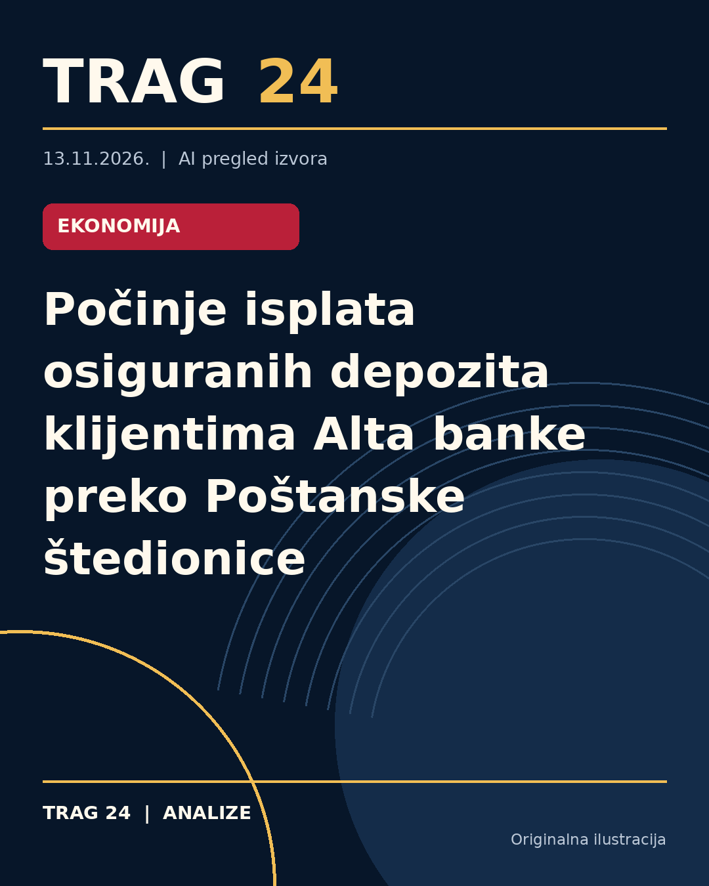

Počinje isplata osiguranih depozita klijentima Alta banke preko Poštanske štedionice

ŠTA SE DOGODILO
Klijentima Alta banke u stečaju danas počinje isplata osiguranih depozita do maksimalnog iznosa od 50.000 evra po deponentu. Isplata će se obavljati u ekspoziturama Poštanske štedionice, koja je preuzela ovaj posao u ime i za račun Agencije za osiguranje depozita, stečajnog upravnika Alta banke.
HRONOLOGIJA
Alta banka je u stečaju od 3. novembra ove godine. Isplata depozita započinje 13. novembra, sa mogućnošću podnošenja zahteva do 3. ili 13. novembra 2029. godine, kako navode izvori. Onlajn portal za zakazivanje termina za isplatu otvoren je od 12. novembra, kako bi se sprečile gužve i olakšala organizacija.
ŠTA NAVODE IZVORI
Sva tri izvora navode da je isplata organizovana na osnovu mreže nekadašnjih 19 ekspozitura Alta banke u Srbiji (sa sedam u Beogradu i 12 u drugim gradovima), uz dodatne kapacitete Poštanske štedionice na mestima sa većim brojem klijenata, kao što su Novi Sad, Niš i Sombor. Ukupno je otvoreno 58 isplatnih mesta širom Srbije. Klijenti moraju da ponesu važeću ličnu kartu ili pasoš, kao i originalnu ispravu o računu ili depozitu u Alta banci, a pravna lica dodatno dostavljaju OP obrazac i eventualno ovlašćenje. Za prenos sredstava u evrima u drugu domaću banku potrebno je imati i uputstvo banke primaoca deviznog računa.
ŠTA JE POTVRĐENO
Potvrđeno je da pravo na isplatu imaju fizička lica, preduzetnici, mikro, mala i srednja pravna lica, kao i registrovana udruženja i drugi subjekti koji ispunjavaju uslove, do osiguranog maksimalnog iznosa od 50.000 evra po deponentu. Ekspoziture su blagovremeno snabdevene gotovinom iz namenski formiranog Fonda za osiguranje depozita. Specijalizovana ekspozitura Poštanske štedionice u centru Beograda (Ulica kraljice Marije 3) ima 28 isplatnih šaltera namenjenih isključivo isplati depozita Alta banke.
ŠTA NIJE POTVRĐENO
Nije detaljno pojašnjeno koliko klijenata ukupno ostvaruje pravo na isplatu, niti koliki su ukupni iznosi depozita koji će biti isplaćeni. Takođe, nije navedeno da li postoje specifični uslovi osim navedenih za preduzetnike i pravna lica. Nema informacija o eventualnim promenama u toku isplate ili slučajevima većih iznosa od 50.000 evra.
ŠTA OSTАJE OTVORENO: Ostaje otvoreno pitanje dinamike i efikasnosti isplate u praksi, kao i da li će svi klijenti moći da podnesu zahteve bez problema do krajnjeg roka 2029. godine. Takođe nije poznato hoće li biti dodatnih mera u slučaju većeg interesovanja ili potreba za proširenjem mreže isplatnih mesta. Nejasno je i kako će se dalje postupati sa depozitima koji prelaze osigurani limit.
Izvori
- https://nova.rs/vesti/biznis/u-postanskoj-stedionici-pocinje-isplata-osiguranih-depozita-klijentima-alta-banke-u-stecaju/
- https://n1info.rs/biznis/pocinje-isplata-depozita-alta-banke-u-postanskoj-stedionici/
- https://www.blic.rs/biznis/vesti/danas-pocinje-isplata-osiguranih-depozita-alta-banke-do-50000-evra/h86m8zc
Ova analiza je pripremljena uz pomoć veštačke inteligencije na osnovu javno dostupnih izvora. Navodi izvora nisu nužno nezavisno potvrđeni.